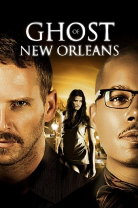

Policial Sob Suspeita (2011)


In the city of ghosts, one woman wants the police to find her killer.

Avaliação (TMDb):


4.9/10 (15 votos)
Avaliação (Usuário):
Outro Título:Little Murder
País:United States, 98 minutos
Idiomas falados:Inglês, Português
Gênero(s):Drama, Suspense
Diretor(s):Predrag Antonijević
Codec:MPEG-2 (DVD)
Número: 4608
Sinopse:
Após a tragédia do furacão Katrina, na cidade de New Orleans, um detetive encontra o fantasma de uma mulher assassinada que precisa de ajuda para identificar seu assassino.
Elenco:
Josh Lucas, Terrence Howard, Lake Bell, Deborah Ann Woll, Bokeem Woodbine, Noah Bean, Cary Elwes, Joseph J. Tomaska, Peter Jason
Tipo de mídia: DVD5,
Legendas: Português,
Alugado: Não
Tela: Anamorphic Widescreen